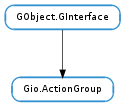

| Subclasses: | Gio.Application, Gio.DBusActionGroup, Gio.SimpleActionGroup, Gtk.ApplicationWindow |
|---|
| action_added(action_name) | |
| action_enabled_changed(action_name, enabled) | |
| action_removed(action_name) | |
| action_state_changed(action_name, state) | |
| activate_action(action_name, parameter) | |
| change_action_state(action_name, value) | |
| get_action_enabled(action_name) | |
| get_action_parameter_type(action_name) | |
| get_action_state(action_name) | |
| get_action_state_hint(action_name) | |
| get_action_state_type(action_name) | |
| has_action(action_name) | |
| list_actions() | |
| query_action(action_name) |
None
| Name | Parameters | Return | Description |
|---|---|---|---|
| action-added | str | Signals that a new action was just added to the group. This signal is emitted after the action has been added and is now visible. | |
| action-enabled-changed | str, bool | Signals that the enabled status of the named action has changed. | |
| action-removed | str | Signals that an action is just about to be removed from the group. This signal is emitted before the action is removed, so the action is still visible and can be queried from the signal handler. | |
| action-state-changed | str, GLib.Variant | Signals that the state of the named action has changed. |
Bases: GObject.GInterface
Gio.ActionGroup represents a group of actions. Actions can be used to expose functionality in a structured way, either from one part of a program to another, or to the outside world. Action groups are often used together with a Gio.MenuModel that provides additional representation data for displaying the actions to the user, e.g. in a menu.
The main way to interact with the actions in a Gio.ActionGroup is to activate them with Gio.ActionGroup.activate_action (). Activating an action may require a GLib.Variant parameter. The required type of the parameter can be inquired with Gio.ActionGroup.get_action_parameter_type (). Actions may be disabled, see Gio.ActionGroup.get_action_enabled (). Activating a disabled action has no effect.
Actions may optionally have a state in the form of a GLib.Variant. The current state of an action can be inquired with Gio.ActionGroup.get_action_state (). Activating a stateful action may change its state, but it is also possible to set the state by calling Gio.ActionGroup.change_action_state ().
As typical example, consider a text editing application which has an option to change the current font to ‘bold’. A good way to represent this would be a stateful action, with a boolean state. Activating the action would toggle the state.
Each action in the group has a unique name (which is a string). All method calls, except Gio.ActionGroup.list_actions () take the name of an action as an argument.
The Gio.ActionGroup API is meant to be the ‘public’ API to the action group. The calls here are exactly the interaction that ‘external forces’ (eg: UI, incoming D-Bus messages, etc.) are supposed to have with actions. ‘Internal’ APIs (ie: ones meant only to be accessed by the action group implementation) are found on subclasses. This is why you will find - for example - Gio.ActionGroup.get_action_enabled () but not an equivalent set() call.
Signals are emitted on the action group in response to state changes on individual actions.
Implementations of Gio.ActionGroup should provide implementations for the virtual functions Gio.ActionGroup.list_actions () and Gio.ActionGroup.query_action (). The other virtual functions should not be implemented - their “wrappers” are actually implemented with calls to Gio.ActionGroup.query_action ().
| Parameters: | action_name (str) – the name of an action in the group |
|---|
Emits the Gio.ActionGroup ::action-added signal on action_group.
This function should only be called by Gio.ActionGroup implementations.
| Parameters: |
|---|
Emits the Gio.ActionGroup ::action-enabled-changed signal on action_group.
This function should only be called by Gio.ActionGroup implementations.
| Parameters: | action_name (str) – the name of an action in the group |
|---|
Emits the Gio.ActionGroup ::action-removed signal on action_group.
This function should only be called by Gio.ActionGroup implementations.
| Parameters: |
|
|---|
Emits the Gio.ActionGroup ::action-state-changed signal on action_group.
This function should only be called by Gio.ActionGroup implementations.
| Parameters: |
|
|---|
Activate the named action within action_group.
If the action is expecting a parameter, then the correct type of parameter must be given as parameter. If the action is expecting no parameters then parameter must be None. See Gio.ActionGroup.get_action_parameter_type ().
| Parameters: |
|
|---|
Request for the state of the named action within action_group to be changed to value.
The action must be stateful and value must be of the correct type. See Gio.ActionGroup.get_action_state_type ().
This call merely requests a change. The action may refuse to change its state or may change its state to something other than value. See Gio.ActionGroup.get_action_state_hint ().
If the value GLib.Variant is floating, it is consumed.
| Parameters: | action_name (str) – the name of the action to query |
|---|---|
| Returns: | whether or not the action is currently enabled |
| Return type: | bool |
Checks if the named action within action_group is currently enabled.
An action must be enabled in order to be activated or in order to have its state changed from outside callers.
| Parameters: | action_name (str) – the name of the action to query |
|---|---|
| Returns: | the parameter type |
| Return type: | GLib.VariantType |
Queries the type of the parameter that must be given when activating the named action within action_group.
When activating the action using Gio.ActionGroup.activate_action (), the GLib.Variant given to that function must be of the type returned by this function.
In the case that this function returns None, you must not give any GLib.Variant, but None instead.
The parameter type of a particular action will never change but it is possible for an action to be removed and for a new action to be added with the same name but a different parameter type.
| Parameters: | action_name (str) – the name of the action to query |
|---|---|
| Returns: | the current state of the action |
| Return type: | GLib.Variant |
Queries the current state of the named action within action_group.
If the action is not stateful then None will be returned. If the action is stateful then the type of the return value is the type given by Gio.ActionGroup.get_action_state_type ().
The return value (if non-None ) should be freed with GLib.Variant.unref () when it is no longer required.
| Parameters: | action_name (str) – the name of the action to query |
|---|---|
| Returns: | the state range hint |
| Return type: | GLib.Variant |
Requests a hint about the valid range of values for the state of the named action within action_group.
If None is returned it either means that the action is not stateful or that there is no hint about the valid range of values for the state of the action.
If a GLib.Variant array is returned then each item in the array is a possible value for the state. If a GLib.Variant pair (ie: two-tuple) is returned then the tuple specifies the inclusive lower and upper bound of valid values for the state.
In any case, the information is merely a hint. It may be possible to have a state value outside of the hinted range and setting a value within the range may fail.
The return value (if non-None ) should be freed with GLib.Variant.unref () when it is no longer required.
| Parameters: | action_name (str) – the name of the action to query |
|---|---|
| Returns: | the state type, if the action is stateful |
| Return type: | GLib.VariantType |
Queries the type of the state of the named action within action_group.
If the action is stateful then this function returns the GLib.VariantType of the state. All calls to Gio.ActionGroup.change_action_state () must give a GLib.Variant of this type and Gio.ActionGroup.get_action_state () will return a GLib.Variant of the same type.
If the action is not stateful then this function will return None. In that case, Gio.ActionGroup.get_action_state () will return None and you must not call Gio.ActionGroup.change_action_state ().
The state type of a particular action will never change but it is possible for an action to be removed and for a new action to be added with the same name but a different state type.
| Parameters: | action_name (str) – the name of the action to check for |
|---|---|
| Returns: | whether the named action exists |
| Return type: | bool |
Checks if the named action exists within action_group.
| Returns: | a None-terminated array of the names of the actions in the groupb |
|---|---|
| Return type: | [str] |
Lists the actions contained within action_group.
The caller is responsible for freeing the list with GLib.strfreev () when it is no longer required.
| Parameters: | action_name (str) – the name of an action in the group |
|---|---|
| Returns: | True if the action exists, else False |
| Return type: | bool, enabled: bool, parameter_type: GLib.VariantType, state_type: GLib.VariantType, state_hint: GLib.Variant, state: GLib.Variant |
Queries all aspects of the named action within an action_group.
This function acquires the information available from Gio.ActionGroup.has_action (), Gio.ActionGroup.get_action_enabled (), Gio.ActionGroup.get_action_parameter_type (), Gio.ActionGroup.get_action_state_type (), Gio.ActionGroup.get_action_state_hint () and Gio.ActionGroup.get_action_state () with a single function call.
This provides two main benefits.
The first is the improvement in efficiency that comes with not having to perform repeated lookups of the action in order to discover different things about it. The second is that implementing Gio.ActionGroup can now be done by only overriding this one virtual function.
The interface provides a default implementation of this function that calls the individual functions, as required, to fetch the information. The interface also provides default implementations of those functions that call this function. All implementations, therefore, must override either this function or all of the others.
If the action exists, True is returned and any of the requested fields (as indicated by having a non-None reference passed in) are filled. If the action doesn’t exist, False is returned and the fields may or may not have been modified.